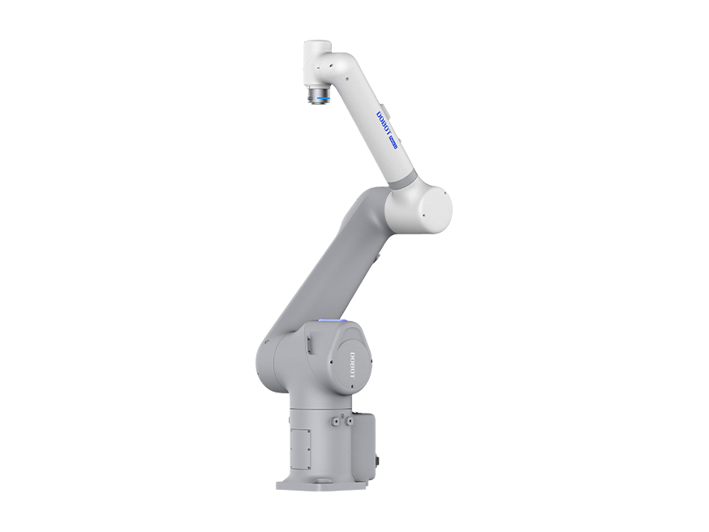
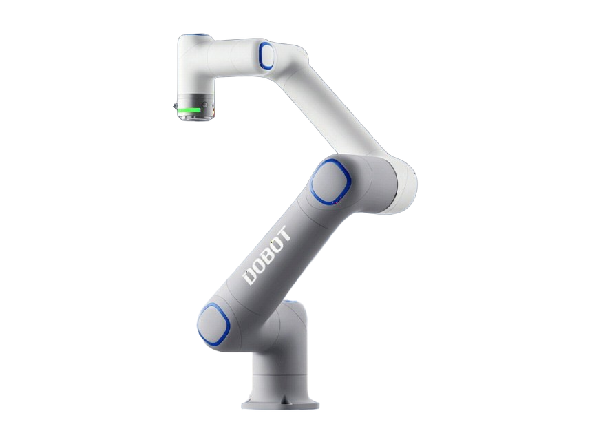
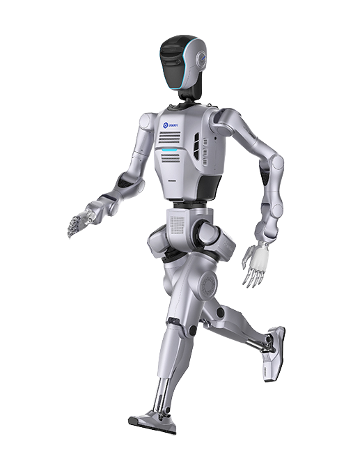
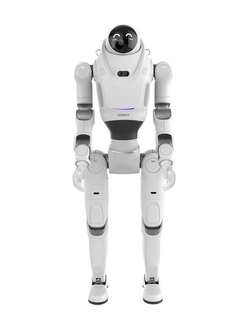

PULSA 12
Dobot PULSA 12 is a robot arm from China, announced 2026.
Sources retrieved: (A, B)
- Applications
- Indicative price
- Not stated

Manufacturer's own photo. Press photo: Dobot (dobot-robots.com), PULSA product page; the PULSA 12 is the larger of the two arms in the product image.
Specifications
11 of 22 stated 11 not stated
11 fields hidden
How to read the figuresShow guideClose
- not statedNo source
- noStated by a source
- 0Reported as zero
- ASource
- A*Source with a caveat (select it)
- CERecords only what the manufacturer states regarding CE marking.
Select a source marker for source details and notes.
Performance4/5 disclosed
Physical4/5 disclosed
Mounting, power and communication2/4 disclosed
Software and integration0/2 disclosed
Commercial0/1 disclosed
Compliance & certifications1/5 disclosed
Against the field
Each strip holds every robot of this type in the guide that states the figure, one bar per group of values. Further right means a larger figure, not a better robot. A taller bar means more robots in that group.
Payload
12kg26.5lbOur conversion from 12 kg. The manufacturer does not state an imperial figure itself, so the conversion has no source of its own.
73 robot arms state a payload
28 state a higher figure, 38 a lower one. 6 more state exactly the same figure.
Reach
1,450mm57.1inOur conversion from 1,450 mm. The manufacturer does not state an imperial figure itself, so the conversion has no source of its own.
70 robot arms state a reach
26 state a higher figure, 41 a lower one. 2 more state exactly the same figure.
Weight
125kg276lbOur conversion from 125 kg. The manufacturer does not state an imperial figure itself, so the conversion has no source of its own.
68 robot arms state a weight
11 state a higher figure, 56 a lower one. Log scale: each step along the axis multiplies the value.
Notes
DOBOT presented PULSA at its 2026 Robotics Ecosystem Conference in Frankfurt on 20 October 2026.
Intended use, per the manufacturer. “PULSA A New Breed of Industrial Cobot”
Sources
One line per source, not per figure: a source has one retrieval date.
- Adobot-robots.com/products/pulsa/pulsa.htmlMain source. Retrieved
- Bdobot-robots.com/insights/news/dobot-unveils-three-new-products-at-its-2026-robotics-ecosystem-conference.htmlSecondary. Retrieved
More robots
Same manufacturer

CR12HTDobot

CR7HTDobot

PULSA 7Dobot

AtomDobotHumanoid

Atom MaxDobotHumanoid

LUMODobotHumanoid